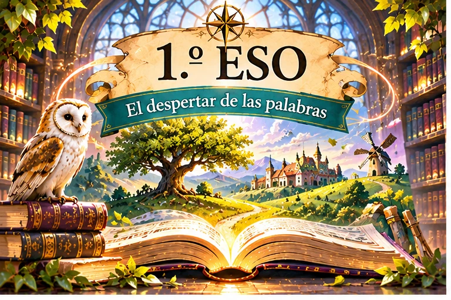
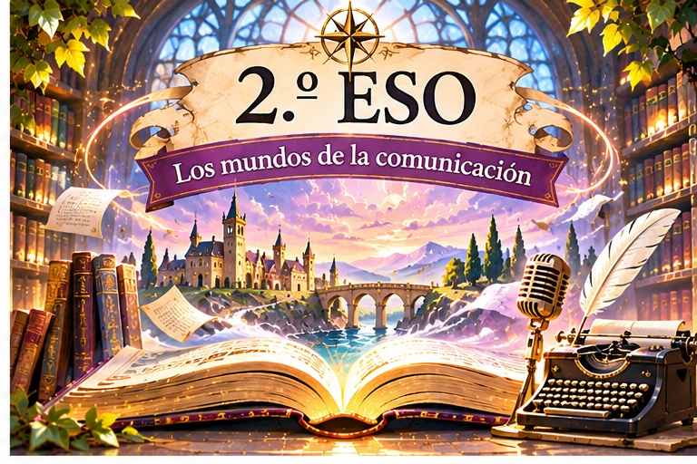
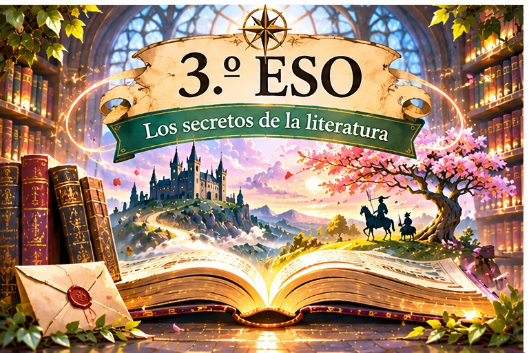
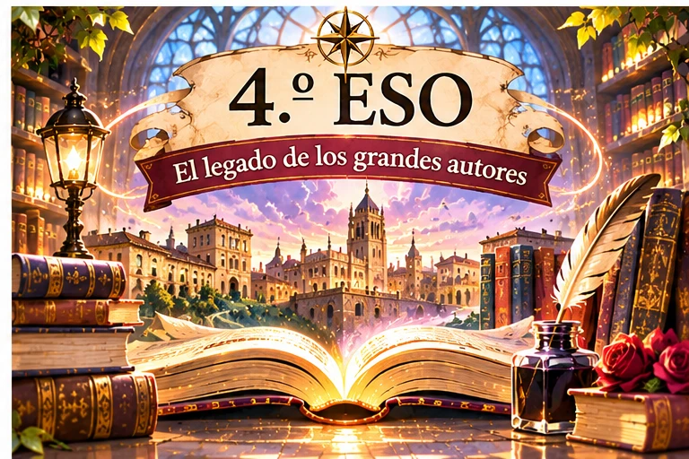

Bienvenidos al gran vestíbuloLa Biblioteca
La Biblioteca
de los Mundos
Cuatro cursos. Infinitas historias. Un mismo viaje: el poder de las palabras.
Conoce a Ariadna ✨
Tu guía en la biblioteca
Ariadna, la guardiana del tiempo
«Las historias nos conectan. Nos transforman».
¡Bienvenidos, viajeros! Soy Ariadna y custodio las puertas de esta biblioteca. Cada curso es un camino distinto: aprenderéis a escuchar las palabras, descifrar historias, viajar a otras épocas y encontrar vuestra propia voz.
En cada camino os esperan historias, retos y un espacio donde encontrar vuestra propia voz. La lechuza vigilará los secretos de los libros y yo os acompañaré en cada aventura.
Elegir mi caminoElige tu puerta
Cuatro caminos, una biblioteca
Cada curso tiene su propia atmósfera, adaptada a sus viajeros. Todas las puertas forman parte de la misma historia.




🦉 La lechuza guardiana
Protege los libros y acompaña a Ariadna. Las misiones se irán desbloqueando a medida que avancemos en cada curso.